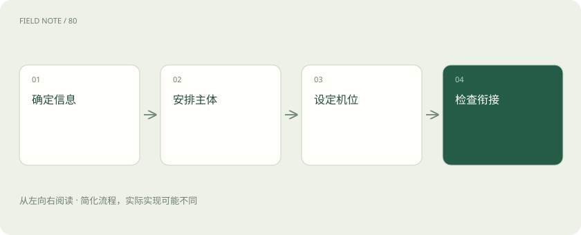

先读哪些知识
先用一个类比理解
类比只帮助建立直觉，不等同于技术的完整机制。
一图看懂
视频增加的是时间约束
单张图只需在一个时刻看起来合理，视频还要让相邻时刻的主体、背景和动作彼此解释。人物衣服突然换色，可能每一帧单看都漂亮，但连续播放就破坏身份一致性。视频生成因此不仅是画质任务，还涉及物体持续存在、运动轨迹和遮挡后的再出现。
以一只红色行李箱穿过车站为例，应分别检查箱体颜色、轮子数量、提手连接和运动方向。本站建议先写一份时间约束清单，再生成候选。只有首帧正确不能证明整段正确，尤其要检查主体经过柱子遮挡后的形状；这类错误在只展示开头截图的演示里很容易被遗漏。
图生视频把图像变成初始条件
图生视频使用输入图像约束视频生成，可以帮助固定起始构图、主体外观与场景布局。但输入图像没有提供背面、遮挡后区域或后续动作的全部信息，模型仍需推断这些内容。它不是把照片中的真实三维场景完整恢复出来，因此转身和大视角变化常需要特别检查。
行李箱首图只露出正面，要求镜头绕到背面，就会要求模型补出未知结构。若业务强调真实产品细节，应缩小镜头变化，或者提供适合具体模型的额外参考条件。本站建议将“首帧保留”与“全程身份一致”拆开验收，不能因为起点贴近参考图就推断后续画面已经受到同样严格的控制。
主体动作和摄影机动作分别描述
主体移动与摄影机移动会同时改变画面，但含义不同。“箱子向右移动”描述物体轨迹，“镜头向右平移”描述观察者轨迹，两者可能抵消，也可能共同放大画面变化。提示词堆叠推进、旋转、跟拍和变焦，会增加约束冲突，模型可能只保留其中一部分。
先让行李箱沿直线被拉走，摄影机固定；确认主体动作清晰后，再试轻微跟拍，比较箱体是否稳定。本站建议把一个短镜头写成主体、动作、镜头和环境四项，明确谁在动以及朝哪里动。动作描述不是物理模拟的严格控制输入，复杂接触与高速运动仍需通过候选筛选验证。
图解：镜头设计路径

潜空间压缩与时序建模
许多视频管线在压缩后的潜表示中处理空间与时间，再解码为视频帧。时序注意力或其他时序模块让不同时间位置交换信息，使模型有机会协调连续变化。压缩降低处理成本，但细小文字、薄结构和快速动作也可能在编码或解码过程中受损，不能把潜空间等同于无损录像。
行李箱上的小标签可能在解码后闪烁，即使整体箱体运动平稳。应区分全局运动一致性与局部纹理稳定性，两者可能表现不同。本站建议分别观察完整播放和局部裁切回放，避免用画面整体流畅掩盖关键标签不可读的问题。具体采用何种压缩和时序模块，要查询所用模型而非从产品名称猜测。
不能把所有视频模型都叫扩散
Diffusers官方视频文档展示了使用扩散相关管线的视频生成方法，但这是库所覆盖的实现范围，不是视频生成的完整分类。视频生成还可以使用自回归等建模思路；采用Transformer骨干，也不能单独判断模型的训练目标与采样过程。扩散与流匹配的具体区别同样需要看模型说明。
选择产品时，应分别询问输入形式、生成目标、时序表示与推理方式，而不是看到“DiT”就推断所有细节相同。本站建议在教学和采购材料中标明所讨论的模型家族。对某个扩散管线有效的采样参数，不应直接当成其他生成机制的通用调节旋钮，尤其不能比较名称相同但含义不同的设置。
长片应通过镜头组织降低难度
一次要求长时间连续运动，会累积身份、空间和叙事约束。把故事拆成若干目的明确的镜头，可以让每段独立验收，也更容易替换失败片段；代价是镜头间的衣物、光线和位置需要另行协调。剪辑并不会自动消除主体不一致，只是把问题从单段时间转移到跨段衔接。
行李箱到站的故事可以拆成站台远景、手拉箱体近景和出口跟拍。为每段保存参考图及相邻镜头的出入画方向，避免上一段向右走、下一段无缘由向左走。本站建议先用分镜说明信息顺序，再安排生成，不能靠后期剪辑修复全部因果错误或缺失的关键动作。
成本要算可用片段而非单次生成
分辨率、帧数、采样设置、模型规模和硬件都会影响资源需求。显存优化可能通过分块解码或卸载降低峰值占用，也可能增加传输与等待；具体效果需在同一环境实测。单次请求较便宜不等于最终交付较便宜，因为大量失败候选和后期处理会进入总成本。
如果需要一个行李箱通过柱子的可用镜头，应统计生成候选、筛选、补生成、放大与剪辑的完整投入。本站建议报告每个通过验收片段的总耗时和资源，而不是只报告最快一条样片。比较时固定时长、尺寸与验收标准，防止把较短或较宽松的候选误判为模型效率更高。
图解：可用片段成本
把失败拆成能定位的类别
评测应分开记录文本遵循、主体身份、动作完成、物体接触、镜头轨迹和时间稳定性。观看者可能被漂亮光照吸引而忽略轮子滑动或提手断开，因此应同时完整播放和抽查关键时间段。逐帧检查能够发现形变，但不能替代连续播放对节奏与闪烁的感知。
本站建议在模型比较中固定首图和镜头任务，记录不同随机候选的通过情况，并说明样本范围。不要宣称某次成功代表物理理解全面可靠。对失败片段给出可行动原因，例如减少绕拍、增加参考或改写主体动作；如果关键产品结构仍不稳定，就应缩小任务，而不是只继续增加形容词。
放在一起对比
| 维度 | 能力 | 边界 |
|---|---|---|
| 首图 | 固定起始外观 | 不能给出全部背面结构 |
| 时序模块 | 协调时间信息 | 不保证物理正确 |
| 分镜 | 降低单段复杂度 | 需要跨镜头连续性 |
| 优化 | 降低资源峰值 | 可能增加等待 |
放进真实场景
像拍摄旅行短片：有了漂亮的开场照片，还需要安排人物怎么走、摄影机怎么跟以及镜头如何连接。
别踩这个误区
想一想
主体遮挡后换了箱型，但每帧都很清晰，算通过吗？
不算。清晰度与身份一致性是独立维度，遮挡后的主体变化违反了持续性要求。
关联阅读
资料与边界
本文为原创知识讲解。类比和图示经过简化；示例数字不代表实测或报价。整理日期：2026-11-05。文末列出对应技术的原始资料，具体功能与版本支持请以原文为准。